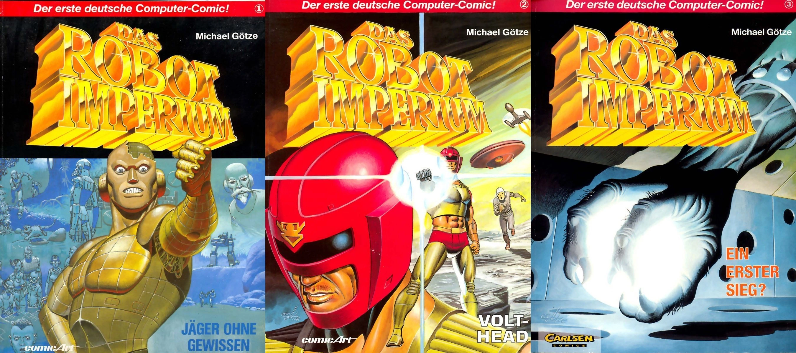
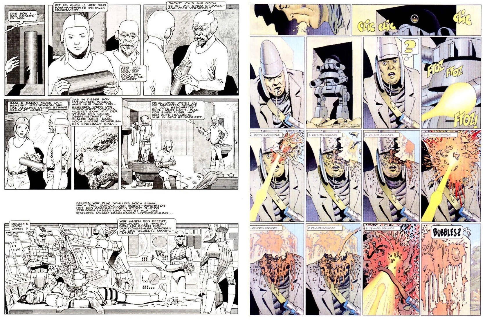
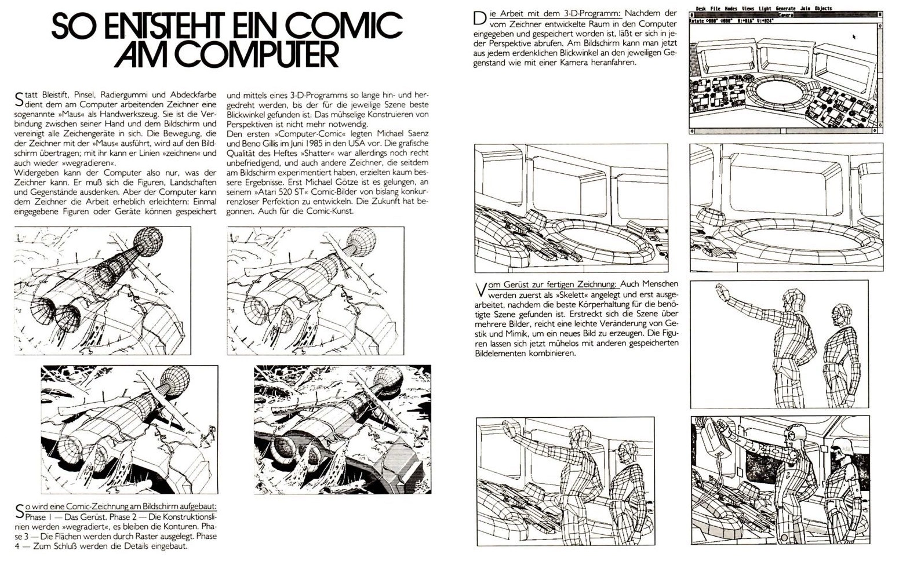

IV. The Other First Computer Comic
"Someone asked me the other day what it feels like to see all my 'old stuff' reappearing, at long last, in digital. And I had to smile because to me it doesn't feel like 'old stuff.'"
- Barbara Hambly
Mike Saenz was the first to produce and publish a complete comic book on a computer, but other artists quickly followed. In 1988, the German comic book artist Michael Götze created the comic album Das Robot Imperium, the first European comic created on a computer. For this black-and-white comic he used not an Apple Macintosh but the Atari 520ST, an affordable competitor of the Mac that also came with a mouse as standard.

Figure 26: Michael Götze's traditionally painted covers for Das Robot Imperium volumes 1 to 3 (Source: Das Robot Imperium by Michael Götze, Carlsen Comics Verlag, 1988, 1990, 1992)
Pixel Imperium
The comic chronicles the fight of a small group of humans against the robots who rule over them. Even in the 1980s, this was not the most original plot. As with Shatter, the comic's main selling point was that the artist had created it on a computer.
Even though the first volume of Das Robot Imperium, "Jäger ohne Gewissen" ("Hunter Without a Conscience"), does without color, it is a far more lavish and elaborate work than Shatter. The scenes in its panels have depth and dimension, and the figures are not flat as they are in Shatter. Götze renders the characters' faces with much greater expressiveness. He also took much more time over each page than the fast release schedule of Shatter would have allowed.

Figure 27: Left: interior black-and-white page from volume one Das Robot Imperium: Jäger ohne Gewissen. Right: interior pages from volume two Das Robot Imperium: Volthead
The Creation Process
On the Atari ST, Götze programmed his own 3D wireframe application and special printing software in GFA-Basic. In the application, which he called Pixelart, he created 3D models of the human body, put them in different poses, and combined the figures with flat backgrounds. He also modeled props and mechanical backgrounds such as a command center in 3D. Once the models existed, he could place them in a scene and construct complicated perspectives with the wireframes. Eventually, Götze had a library of objects that he could reuse.
To give the images their final polish, he laboriously touched them up with the mouse in the Atari ST paint application D.E.G.A.S. Elite.
Work on Robot Imperium started in 1986 with the first of three volumes in the European album format. Götze drew this volume in black and white. Its gradients are dot patterns, printed on the Epson FX-80, a dot-matrix printer typical of offices at the time.
The backs of the first two volumes show a photo of Götze toiling away at his Atari ST. The last few pages of the first volume describe his process for drawing the panels under the title "This Is How a Comic Is Made on a Computer" ("So entsteht ein Comic am Computer"). From today's perspective, it seems comical that the description includes a short explanation of how a computer mouse works. There is even a mention of Shatter by Mike Saenz and Peter B. Gillis (inexplicably, the text calls him Beno Gillis). The piece's writer does not hold Saenz's computer art in high regard: its graphic quality is called "still quite unsatisfactory" ("noch recht unbefriedigend"), and the other artists who have experimented at the screen since are said to have achieved hardly better results.
The most interesting parts of this description are the screenshots of the individual steps in Götze's process. They show how he places the rudimentary 3D model of a spaceship over a rough sketch of the background foliage in a forest scene. The wireframe of the spaceship shows all sides, even the parts that should be hidden from the viewer. Götze cleans up the image by hand, meticulously removing the lines that should not be visible. He then embellishes the hand-drawn background to integrate it with the 3D model, spots the black areas, and emphasizes individual lines to give them more weight. Finally, he shades the image with dot patterns for different levels of light and dark.
Artistically, this painstaking process proved very successful. The drawings are very much in the style of the French bandes dessinées of the 1980s, which speaks to the artist's craftsmanship. In 1990 Götze followed the first volume with a second, titled "Volthead," this time in full color. It was printed on a dot-matrix printer in multiple passes with ribbons of different colors.

Figure 28: A description of the process of creating a computer comic in Das Robot Imperium: Jäger ohne Gewissen
The Ghost of A Different Future
In 1992, Götze released the third volume, "Ein erster Sieg?" ("A First Victory?"), with even more detailed drawings and an even higher level of artistic accomplishment. Its slickness brought it so close to traditionally drawn and colored comics that it is indistinguishable from them at first glance. This also meant that, despite all the effort put into it, the comic lost one of its most distinctive features: the "look" of a computer comic.
Commercially, Das Robot Imperium was not very successful. It nevertheless bears witness to artistic dedication, adventurous graphical experimentation, and the stubbornness needed to wring professional results from a barely suitable computer.